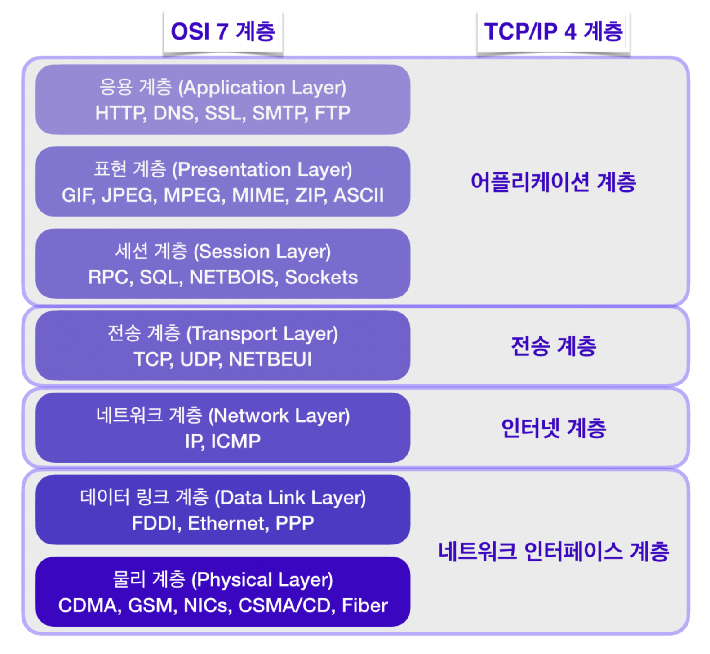
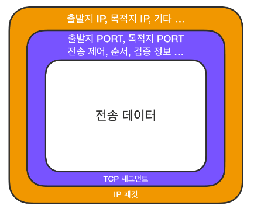
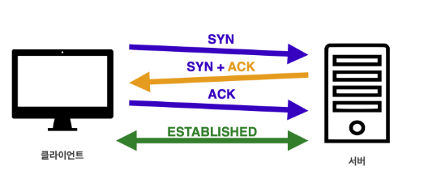
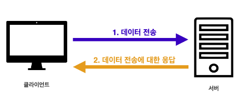
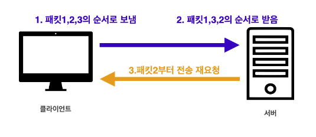

TCP(Transmission Control Protocol)는 인터넷상에서 데이터를 메세지의 형태로 보내기 위해 IP와 함께 사용하는 프로토콜이다.
네트워크 프로토콜 계층은 OSI 7계층과 TCP/IP 4 계층으로 나눌 수 있다.

TCP/IP 4 계층은 OSI 7 계층보다 먼저 개발되었으며 TCP/IP 프로토콜의 계층은 OSI 모델의 계층과 정확하게 일치하지는 않는다.
실제 네트워크 표준은 업계표준을 따르는 TCP/IP 4 계층에 가깝다.
IP 프로토콜 보다 더 높은 계층에 TCP 프로토콜이 존재하기 때문에 IP 프로토콜의 한계를 보완할 수 있다.
TCP 세그먼트에는 IP 패킷의 출발지 IP와 목적지 IP 정보를 보완할 수 있는 출발지 PORT, 목적지 PORT, 전송 제어, 순서, 검증 정보 등을 포함한다.

TCP는 같은 계층에 속한 UDP에 비해 상대적으로 신뢰할 수 있는 프로토콜이며 연결 지향, 데이터 전달 보증, 순서 보장이라는 특징이 있다.
TCP는 장치들 사이에 논리적인 접속을 성립하기 위하여 3 way handshake를 사용하는 연결지향형 프로토콜이다.

클라이언트는 서버에 접속을 요청하는 SYN(Synchronize) 패킷을 보낸다.
서버는 SYN요청을 받고 클라이언트에게 요청을 수락한다는 ACK(Acknowledgment) 와 SYN가 설정된 패킷을 발송하고 클라이언트가 다시 ACK으로 응답하기를 기다린다.
클라이언트가 서버에게 ACK을 보내면 이 이후로부터 연결이 성립되며 데이터를 전송할 수 있다.
만약 서버가 꺼져있다면 클라이언트가 SYN을 보내고 서버에서 응답이 없기 때문에 데이터를 보내지 않는다.
현재에는 최적화가 이루어져 3번 ACK을 보낼때 데이터를 함께 보내기도 한다.
TCP는 데이터 전송이 성공적으로 이루어진다면 이에 대한 응답을 돌려주기 때문에 IP 패킷의 한계인 비연결성을 보완할 수 있다.

만약 패킷이 순서대로 도착하지 않는다면 TCP 세그먼트에 있는 정보를 토대로 다시 패킷 전송을 요청할 수 있다.
이를 통해 IP 패킷의 한계인 비신뢰성(순서를 보장하지 않음)을 보완할 수 있다.

UDP(User Datagram Protocol)는 데이터를 데이터그램 단위로 처리하는 프로토콜로 IP 프로토콜에 PORT, 체크섬 필드 정보만 추가된 단순한 프로토콜이다.
체크섬(checksum)은 중복 검사의 한 형태로 오류 정정을 통해 공간(전자 통신)이나 시간(기억 장치)속에서 송신된 자료의 무결성을 보호하는 단순한 방법이다.
TCP 특징과 비교해 보면 신뢰성은 낮지만 3 way handshake 방식을 사용하지 않기 때문에 TCP와 비교해 빠른 속도를 보장한다.
HTTP3는 UDP를 사용하며 이미 여러 기능이 구현된 TCP보다는 하얀 도화지처럼 커스터마이징이 가능하다는 장점이 있다.
| TCP | UDP |
| 연결 지향형 프로토콜 | 비 연결 지향형 프로토콜 |
| 전송 순서를 보장함 | 전송 순서를 보장하지 않음 |
| 데이터 수신 여부를 확인함 | 데이터 수신 여부를 확인하지 않음 |
| 신뢰성이 높지만 속도가 느림 | 신뢰성이 낮지만 속도가 빠름 |